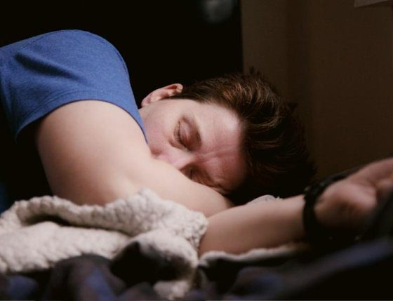

Focus isn't a willpower problem. It's a basics problem.
A 6 week small group sprint for adults with ADHD. Two weeks fixing your sleep, two weeks feeding your brain and two weeks moving your body. Then we build the systems that keep your focus showing up long after the sprint is over.
Your focus sits on top of everything else.
Most ADHD advice starts at the top. A new planner. A new app. A timer. Another morning routine you saw on YouTube.
But when you're running on bad sleep, a brain that isn't getting the nutrients it needs and a body that hasn't moved in weeks, those systems crack every single time. And then you blame yourself.
So we build from the ground up. Get the basics working first. Then the systems you put on top actually stick, and focus becomes the result instead of the fight.
What each one does for your focus.
None of this is a magic pill. It's the stuff nobody told you about when you got diagnosed, and it's the stuff you actually have control over.

Sleep
Sleep is when your brain resets. Run short on it and attention, mood and impulse control are the first things to go. For an ADHD brain that's already working harder to focus, poor sleep turns the volume up on every struggle.
Nutrition
Your brain builds dopamine and norepinephrine from the protein you eat, with help from nutrients like iron, B6 and magnesium. Skip breakfast, live on coffee and processed food, and you're asking your brain to focus without the raw materials.
Exercise
Moving your body raises dopamine and norepinephrine, the same chemicals most ADHD medications target. Research suggests even a single workout can sharpen attention for a while afterward. You don't need a gym. You need to start.
Same systems. Different foundation.
Systems on a shaky foundation
- A new planner that's abandoned by week two
- Timers you ignore because you're exhausted
- Willpower that's gone by 3 in the afternoon
- Another round of "what's wrong with me"
Systems on solid basics
- Routines that stick because you have the energy for them
- A daily game plan your brain can actually follow
- Steadier mood and fewer crashes
- Focus that shows up more days than not
One basic every two weeks. Systems the whole way through.
Fix your sleep
- Build an evening routine you'll actually keep
- Set a wake time and protect it
- Cut what's quietly wrecking your sleep
Feed your brain
- Start the day with a protein first breakfast
- Cut the processed foods draining your focus
- Add the foods your brain uses to make dopamine
Move your body
- Start where you are, even 10 minutes a day
- Find movement you'll keep doing
- Stack it into your morning routine
You'll see it in your own numbers.
On day one you rate your focus from 1 to 10. Then you rate it again every week. No guessing, no vague "I think it's better." Just your score, week by week, as the basics start doing their job.
Built for adults with ADHD who are done forcing it.
This is for you if…
- You've tried the apps and planners and they never stick
- You're tired, wired and running on coffee
- You know your sleep, food or exercise needs work
- You want a small group that keeps you honest
This is not for you if…
- You want a quick fix or a magic pill
- You're not willing to change how you eat or sleep
- You can't show up for the weekly calls
- You're looking for medical or medication advice
I built this sprint on what worked for me.
I'm 56 and was diagnosed with ADHD at 52. For decades I tried to force focus with willpower, and for decades it didn't work.
What finally changed things wasn't a new app. It was the basics. An evening routine that gets me real rest. Feeding my brain instead of running it on coffee. Training 3 to 4 times a week. Once those were in place, the systems I'd failed at for years finally started to stick.
I'm a certified Jay Shetty life coach and ADHD Performance Coach, and I run The ADHD Performance Lab. The Focus Sprint is everything I wish someone had handed me the day I was diagnosed.
Get on the Focus Sprint waitlist.
Spots are limited so the group stays small. Waitlist members hear first when doors open and get the early bird price.
You're on the list. Check your inbox and confirm your email so you don't miss when doors open.
Rather talk it through first? Book a quick call with me →
Questions people ask me.
When does it start?
We kick off Sunday, January 3 and wrap up Saturday, February 13. A fresh start for the new year, without the resolution that's gone by February.
How much time will this take each week?
The weekly group call, plus a few minutes a day on the small change you're working on. The changes are kept small on purpose so they fit into a busy life.
Do I need an ADHD diagnosis?
[YOUR ANSWER]
Will this replace my medication?
No. I'm a coach, not a doctor. The basics work alongside whatever you and your doctor decide. Check any changes to supplements or medication with your doctor.
What if I'm really out of shape?
Perfect. We start where you are. For some people that's a 10 minute walk. Exercise comes last in the sprint on purpose, so better sleep and better food give you the energy to move.
How much does it cost?
[YOUR ANSWER]